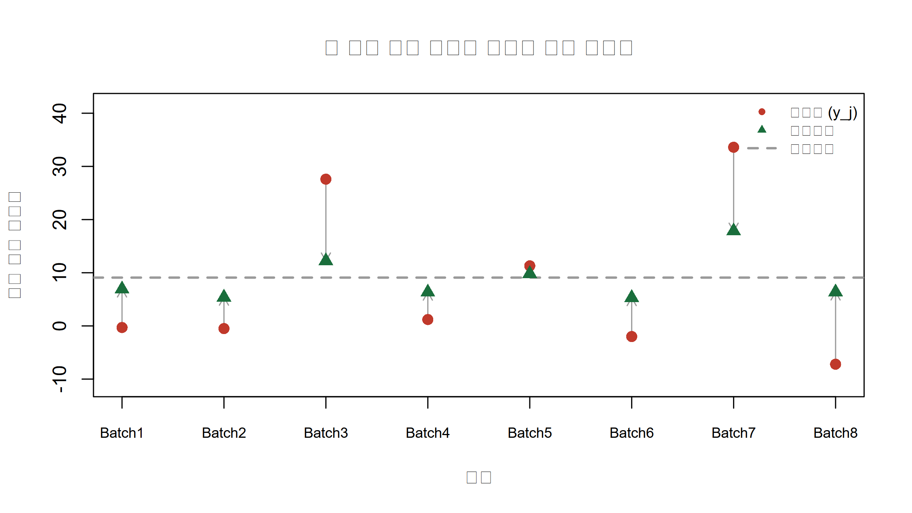

set.seed(9)
n_batch <- 8; batch_id <- paste0("Batch", 1:n_batch)
sigma_j <- c(15, 10, 16, 11, 9, 11, 10, 18) # 배치별 표준오차(표본 수가 달라 다름)
mu_true <- 8; tau_true <- 6 # 참값
theta_true <- rnorm(n_batch, mu_true, tau_true) # 배치별 참 효과 (가상)
y_j <- round(rnorm(n_batch, theta_true, sigma_j), 1) # 관측된 효과 추정치 (가상)
mu_pool <- sum(y_j / sigma_j^2) / sum(1 / sigma_j^2) # 완전 통합: 정밀도 가중 평균
neg_log_marg <- function(par) -sum(dnorm(y_j, par[1], sqrt(sigma_j^2 + exp(par[2])^2), log = TRUE)) # 경험적 베이즈
fit_eb <- optim(c(0, log(5)), neg_log_marg); mu_eb <- fit_eb$par[1]; tau_eb <- exp(fit_eb$par[2])
b_j <- sigma_j^2 / (sigma_j^2 + tau_eb^2) # 축소 계수 B_j
theta_partial <- b_j * mu_eb + (1 - b_j) * y_j # 부분 통합 추정치
cat(sprintf("완전통합 mu = %.2f | 경험적 베이즈 mu = %.2f, tau = %.2f\n", mu_pool, mu_eb, tau_eb))완전통합 mu = 9.09 | 경험적 베이즈 mu = 8.78, tau = 7.58tab1 <- round(rbind(sigma_j, y_j, theta_partial, b_j), 2)
rownames(tab1) <- c("표준오차", "무통합 y_j", "부분통합", "축소계수 B_j"); colnames(tab1) <- batch_id; print(tab1) Batch1 Batch2 Batch3 Batch4 Batch5 Batch6 Batch7 Batch8
표준오차 15.00 10.00 16.00 11.00 9.00 11.00 10.00 18.00
무통합 y_j -0.30 -0.50 27.60 1.20 11.30 -2.00 33.60 -7.20
부분통합 6.93 5.39 12.23 6.34 9.83 5.31 17.84 6.37
축소계수 B_j 0.80 0.63 0.82 0.68 0.58 0.68 0.63 0.85plot(1:n_batch, y_j, type = "n", ylim = range(c(y_j, theta_partial)) + c(-4, 8), xaxt = "n",
main = "세 가지 통합 방식의 배치별 효과 추정치", xlab = "배치", ylab = "처리 효과 추정치")
axis(1, at = 1:n_batch, labels = batch_id, cex.axis = 0.75); abline(h = mu_pool, col = "grey60", lwd = 2, lty = 2)
arrows(1:n_batch, y_j, 1:n_batch, theta_partial, length = 0.08, col = "grey60") # 축소량
points(1:n_batch, y_j, pch = 16, col = "#c0392b", cex = 1.3)
points(1:n_batch, theta_partial, pch = 17, col = "#1a6e3c", cex = 1.3)
legend("topright", bty = "n", cex = 0.8, legend = c("무통합 (y_j)", "부분통합", "완전통합"),
col = c("#c0392b", "#1a6e3c", "grey60"), pch = c(16, 17, NA), lty = c(NA, NA, 2), lwd = c(NA, NA, 2))